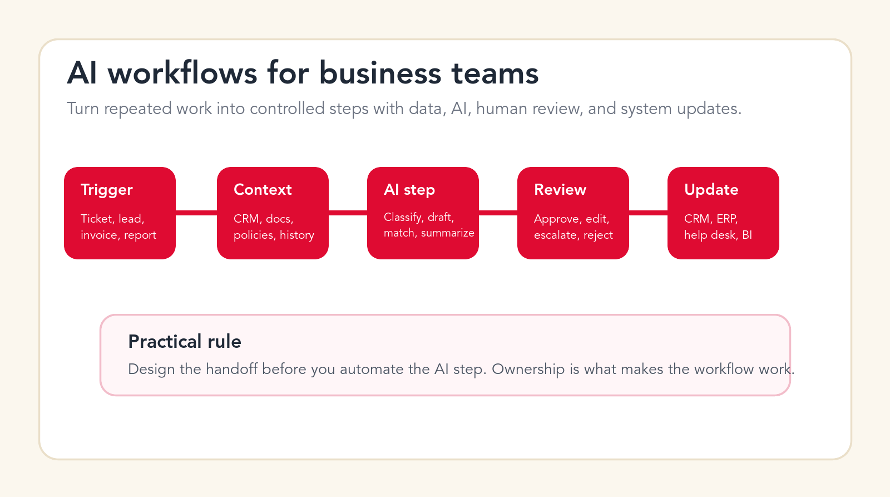

AI Workflow Automation Amsterdam: Search-Data Guide for Service and SaaS Teams
This guide turns the search intent behind ai workflow automation amsterdam into a focused local content asset for Amsterdam companies. It combines search-data methodology, current AI adoption sources, workflow priorities, buyer criteria, and implementation guidance for teams that want practical AI automation rather than generic AI commentary.

Primary query
ai workflow automation amsterdam
Market
Amsterdam, Netherlands
Best first pilot
customer operations triage
Goal
Measured workflow lift
TL;DR
For Amsterdam, the best AI automation content should not chase every AI keyword. It should focus on buyer intent around ai workflow automation amsterdam, ai automation agency amsterdam, ai consulting amsterdam, ai agents amsterdam, business automation amsterdam, then answer the operational question behind the search: what should a local business automate first, what data supports the decision, what risks need controls, and when should the company hire an AI automation agency instead of buying another tool.
Search-Data Brief for Amsterdam
The target cluster for this post is ai workflow automation amsterdam, ai automation agency amsterdam, ai consulting amsterdam, ai agents amsterdam, business automation amsterdam. The cluster combines a service term, a city modifier, and a workflow or solution modifier. That structure is useful because a broad term such as "AI" is too vague, while a term like "ai workflow automation amsterdam" usually suggests a buyer comparing local providers, implementation options, and proof that the agency understands the market.
The search-data rule for this cluster is conservative. Do not publish unsourced monthly volume numbers inside the article. Use Google Keyword Planner to check average monthly searches, competition, and top-of-page bid ranges for the selected location. Use Google Search Console after publishing to monitor impressions, clicks, CTR, average position, queries, pages, countries, and devices. Use Google Trends only for relative momentum because Trends normalizes interest from 0 to 100 rather than reporting absolute search volume.
For Amsterdam, the content should be written around high-intent questions: who can implement AI automation locally, which workflow should be automated first, how fast a pilot can launch, what guardrails protect data and quality, and what ROI evidence should leadership expect. Those questions are more commercially useful than a generic "what is AI automation" article.
Source-backed research notes
- Google Search Console Performance report: Use GSC to validate impressions, clicks, CTR, average position, queries, pages, countries, and devices after the post is indexed.
- Google Ads Keyword Planner: Use Keyword Planner for average monthly searches, competition, and top-of-page bid ranges with the correct country or city targeting.
- Google Trends data FAQ: Use Trends for direction and seasonality only; Google normalizes interest on a 0 to 100 scale, so it is not search volume.
- Eurostat enterprise AI adoption data: Eurostat reported that 20.0% of EU enterprises with 10 or more employees used AI technologies in 2025, up from 13.5% in 2024.
Why Amsterdam Needs a Local AI Automation Angle
Amsterdam teams often work across languages, tools, markets, and time zones, which makes workflow clarity more valuable than another standalone AI tool.
Eurostat reported that 20.0% of EU enterprises with 10 or more employees used AI technologies in 2025, up from 13.5% in 2024.
For local European service pages, that increase matters because it shows AI has moved from experiment to operational planning, but most companies are still early enough that workflow selection and rollout quality can decide the outcome.
That data does not mean every company in Amsterdam should buy the same AI tool. It means there is enough adoption pressure for local businesses to ask a more practical question: which operating workflow should we improve first, and what delivery model gives us a useful result without creating uncontrolled risk?
The answer depends on sector and operating maturity. In Amsterdam, this guide is most relevant for SaaS, logistics support, professional services, customer operations, international service teams. These teams usually have repeated requests, customer or client communication, operational documents, CRM data, reporting pressure, and enough manual coordination that a well-scoped AI pilot can create visible value.

What to Automate First in Amsterdam
The strongest first workflow for Amsterdam is customer operations triage, CRM updates, knowledge retrieval, and reporting across international teams. It has the right mix of volume, business relevance, and manageable risk. The workflow is frequent enough to matter, but it can still be controlled with human review, source links, and limited permissions.
A good first AI automation project should have five properties. It should happen often. It should have a clear input and output. It should have examples from previous work. It should have a named owner who can approve quality. It should create a measurable result such as faster response time, fewer missed follow-ups, cleaner CRM records, shorter document handling time, or more complete weekly reporting.
A weak first project is usually the opposite. It is broad, political, hard to measure, and dependent on unclear data. Examples include "automate our whole company", "replace support", "build an agent for everything", or "connect all data before we know the first use case". Those projects sound strategic, but they often fail because the company has not defined the actual work.
Workflow 1
Multilingual support triage
Classify inbound requests, detect language and urgency, prepare drafts, and route edge cases.
For Amsterdam, this workflow should be scoped around one repeatable input, one accountable owner, one review rule, and one measurable output. That keeps the pilot practical. It also prevents the team from treating AI as a vague assistant instead of a controlled part of the operating model.
The first build should not try to replace the whole process. It should remove the most repetitive step, show the source information used by the AI, and make it easy for a human to approve, edit, reject, or escalate the result. That structure is especially important when the workflow touches SaaS, logistics support, professional services.
Workflow 2
Logistics and order status assistant
Summarize order context, identify missing information, and prepare next-step updates.
For Amsterdam, this workflow should be scoped around one repeatable input, one accountable owner, one review rule, and one measurable output. That keeps the pilot practical. It also prevents the team from treating AI as a vague assistant instead of a controlled part of the operating model.
The first build should not try to replace the whole process. It should remove the most repetitive step, show the source information used by the AI, and make it easy for a human to approve, edit, reject, or escalate the result. That structure is especially important when the workflow touches SaaS, logistics support, professional services.
Workflow 3
SaaS customer-success workflow
Review account signals, draft check-in notes, and flag accounts needing human attention.
For Amsterdam, this workflow should be scoped around one repeatable input, one accountable owner, one review rule, and one measurable output. That keeps the pilot practical. It also prevents the team from treating AI as a vague assistant instead of a controlled part of the operating model.
The first build should not try to replace the whole process. It should remove the most repetitive step, show the source information used by the AI, and make it easy for a human to approve, edit, reject, or escalate the result. That structure is especially important when the workflow touches SaaS, logistics support, professional services.
Workflow 4
Knowledge base improvement
Find repeated questions, identify missing documentation, and prepare article outlines.
For Amsterdam, this workflow should be scoped around one repeatable input, one accountable owner, one review rule, and one measurable output. That keeps the pilot practical. It also prevents the team from treating AI as a vague assistant instead of a controlled part of the operating model.
The first build should not try to replace the whole process. It should remove the most repetitive step, show the source information used by the AI, and make it easy for a human to approve, edit, reject, or escalate the result. That structure is especially important when the workflow touches SaaS, logistics support, professional services.
Workflow 5
Weekly ops dashboard
Combine CRM, ticket, and project updates into a decision-ready summary.
For Amsterdam, this workflow should be scoped around one repeatable input, one accountable owner, one review rule, and one measurable output. That keeps the pilot practical. It also prevents the team from treating AI as a vague assistant instead of a controlled part of the operating model.
The first build should not try to replace the whole process. It should remove the most repetitive step, show the source information used by the AI, and make it easy for a human to approve, edit, reject, or escalate the result. That structure is especially important when the workflow touches SaaS, logistics support, professional services.
AI Automation Agency vs Tool for Amsterdam Companies
A tool can be enough when the workflow is already documented, the data is clean, the team has technical ownership, and the automation pattern is standard. A no-code workflow tool, CRM add-on, helpdesk feature, or document AI product may solve a narrow problem quickly. That can be the right decision for a company that only needs a small improvement.
An AI automation agency is a better fit when the workflow crosses teams, systems, approvals, or sensitive data. In that situation, the company is not only choosing software. It is deciding how work should move, which steps AI can handle, which steps require human review, how outputs are tested, and how the team will adopt the new process.
For Amsterdam, the agency route is especially useful when the business needs discovery, workflow design, integrations, AI agent behavior, permission controls, documentation, training, and ongoing support in one delivery path. It is also useful when leaders need a partner who can say "do not automate this yet" because the data or process is not ready.
| Decision | Use a tool when | Use an agency when |
|---|---|---|
| Workflow clarity | The process is documented and stable. | The process needs mapping, redesign, or cross-team agreement. |
| Data and systems | One system contains most of the needed data. | Data lives across CRM, email, documents, support, finance, and spreadsheets. |
| Risk | Wrong outputs are low impact and easy to fix. | Outputs touch customers, compliance, pricing, finance, or reputation. |
| Rollout | The team can configure, test, document, and maintain the system internally. | The team needs implementation support, training, monitoring, and iteration. |
A 90-Day AI Automation Plan for Amsterdam
The first 30 days should focus on discovery and use-case selection. Interview the process owner, collect workflow examples, identify data sources, map edge cases, and decide what the AI is allowed to do. The output should be a short scorecard, not a long strategy deck. Rank each use case by volume, value, risk, data readiness, integration effort, and owner commitment.
Days 31 to 60 should focus on a pilot. Build the smallest useful workflow with a controlled input, model instructions, source retrieval or system connections, review states, and a measurement layer. The pilot should be used by a small group before wider rollout. This stage should produce real examples, not a demo that only works with perfect sample data.
Days 61 to 90 should focus on adoption, monitoring, and expansion. Train users, collect corrections, update prompts and rules, document exception paths, and compare results against the baseline. If the pilot works, expand the same pattern to the next workflow. If it does not, fix the process assumptions before adding more automation.

How to Measure Impact Without Inflating Claims
The most credible AI automation measurement is operational. For Amsterdam, do not begin with abstract productivity promises. Begin with a baseline. How many requests arrive each week? How long does the current task take? How many items wait in the queue? How often is information missing? How many follow-ups are late? How much rework happens because the first output was incomplete?
After the pilot launches, compare the same metrics. Useful measures include minutes saved per completed item, response time, first-draft quality, approval rate, exception rate, CRM completeness, support backlog, document turnaround time, and user adoption. These metrics are less flashy than a broad AI transformation claim, but they are the numbers leadership can use to decide whether to expand.
Search performance should be measured separately. For this post, monitor GSC impressions and clicks for the exact cluster, the broader service terms, and the city landing page. The goal is not only to rank the blog post. The goal is to help the post strengthen the path to amsterdam-ai-agency.html, AI automation services, AI consulting, AI agent development, and the contact page.
Buyer Checklist for Amsterdam Teams
Use this checklist before hiring an AI automation agency in Amsterdam. It keeps the buying conversation concrete and reduces the risk of paying for a generic AI demo.
- Can the agency explain your Amsterdam workflow in plain business language before proposing a tool?
- Does the agency ask for real examples, edge cases, approval rules, and owner names?
- Can it show how AI output will be reviewed, logged, corrected, and improved?
- Does it know when to use a workflow automation, an AI agent, a knowledge assistant, or a custom AI system?
- Does it define success as an operating metric, not only a model capability?
- Can it connect to the systems your team already uses without forcing a full rebuild?
- Can it document the system so your team is not dependent on one person?
- Does it include training and support after launch?
- Can it say no to weak AI ideas and redirect the budget to better use cases?
- Does it give leadership a phased plan with scope, timeline, risk, and next decision points?
How to Use This Guide With Your Team
Use this guide as a working agenda for a Amsterdam AI automation discussion. Bring one current workflow example, one recent customer or internal request, one source document, and one metric that shows the cost of the manual process. That gives the team enough context to decide whether the workflow is ready for AI support.
The next step is to choose a narrow pilot. For Amsterdam, that usually means selecting one workflow from the examples above, defining the current baseline, naming the process owner, and agreeing where human review is required. A pilot with clear boundaries is easier to test, safer to launch, and more useful for leadership than a broad AI initiative with no measurable output.
If the workflow has enough volume and the team can provide real examples, Go Expandia can help map the process, design the automation, build the AI workflow or agent, train users, and support the system after launch. The aim is not to add AI for its own sake. The aim is to remove repeated work while keeping quality, data handling, and accountability under control.
Local AI automation next step
Want to find the best AI workflow for Amsterdam?
Go Expandia can review your current workflow, identify the strongest pilot, and show what a practical AI automation or AI agent build would look like.
Relevant Go Expandia Services
AI Automation Agency
Use this service when the Amsterdam workflow needs planning, build support, controlled AI agents, or custom integrations.
AI Consulting Services
Use this service when the Amsterdam workflow needs planning, build support, controlled AI agents, or custom integrations.
AI Agent Development
Use this service when the Amsterdam workflow needs planning, build support, controlled AI agents, or custom integrations.
Custom AI Solutions
Use this service when the Amsterdam workflow needs planning, build support, controlled AI agents, or custom integrations.
FAQ
What should Amsterdam companies automate first?
Start with customer operations triage, CRM updates, knowledge retrieval, and reporting across international teams. It is specific enough to scope, common enough to matter, and practical enough to test with human review.
How should we validate search demand for ai workflow automation amsterdam?
Use Keyword Planner for average monthly searches and competition, Search Console for post-publication impressions and clicks, and Trends for relative momentum. Do not mix those numbers as if they measure the same thing.
Should we build an AI agent or a simple automation?
Use a simple automation when rules are stable and outputs are predictable. Use an AI agent when the workflow needs reasoning, retrieval, tool use, summarization, or multi-step task handling with human approval.
Can Go Expandia support local teams in Amsterdam?
Yes. Go Expandia supports AI consulting, automation, agent development, custom AI systems, training, and support for teams that want a practical implementation path.